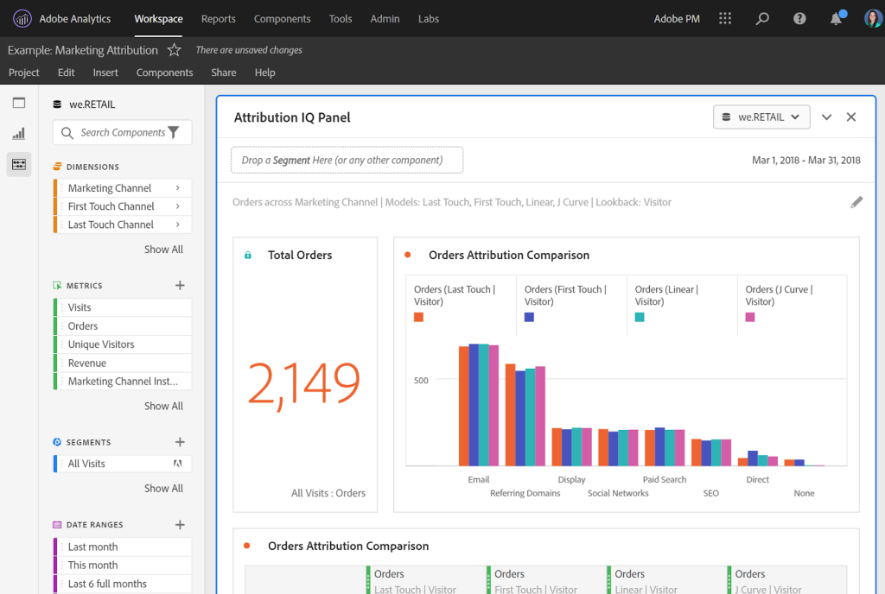
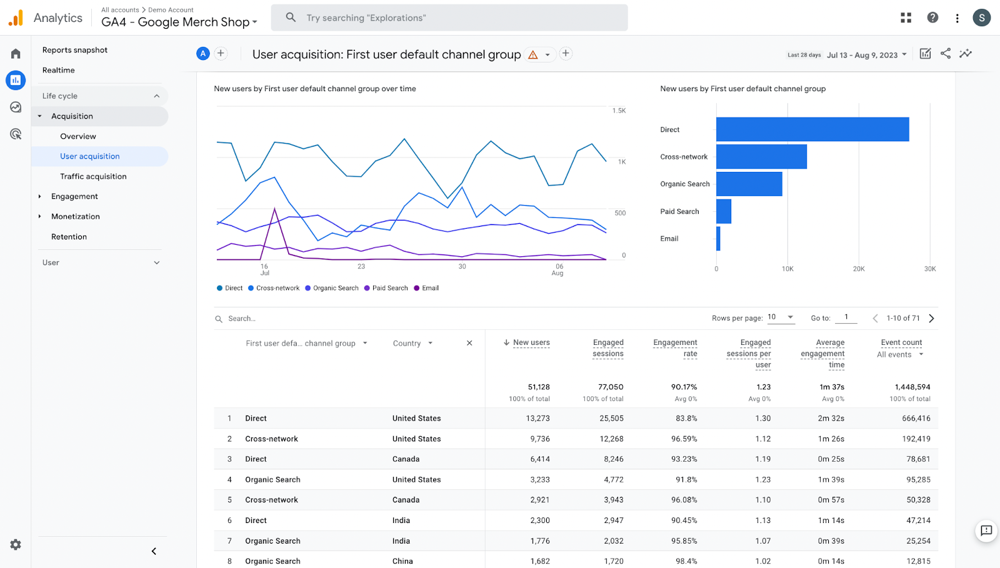
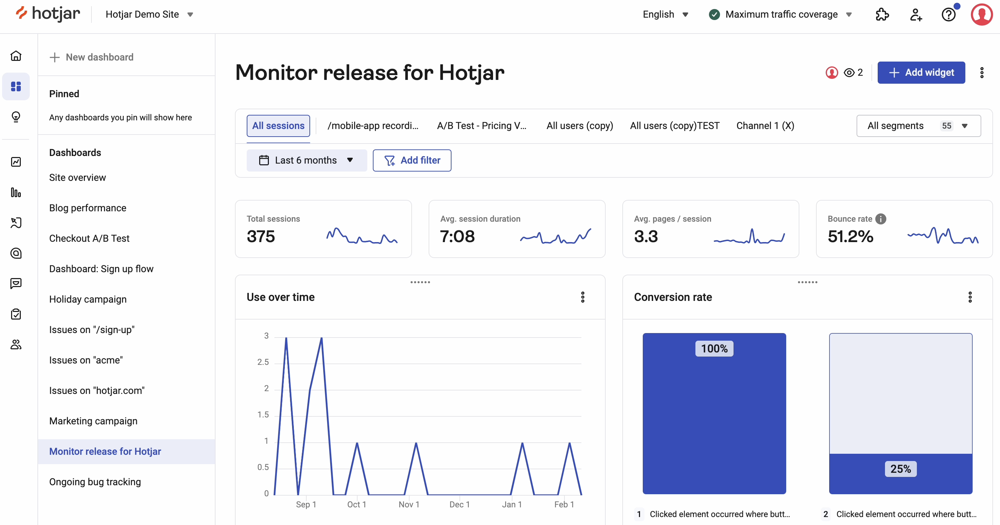

Popular Tools
Adobe Analytics helps businesses analyze web data to improve decision-making.
Featured Analytics Visuals
❮



❯
Learn how websites use analytics to improve performance, user experience, and conversions.
Explore Key MetricsWeb analytics involves collecting, analyzing, and interpreting website data to understand visitor behavior and make informed business decisions.
Adobe Analytics helps businesses analyze web data to improve decision-making.